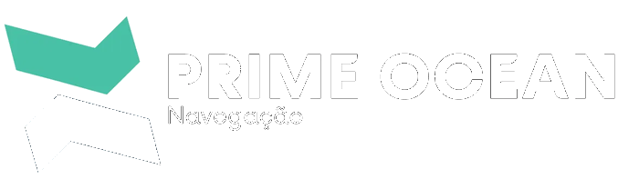

Prime Ocean Navegação · Controle operacional
Lançamento de Barreira
Carregando os dados…
Abrir o painel
ou pressione Enter · clique na logo para voltar a esta tela
Lançamento de Barreira
Conectando…
Filtros